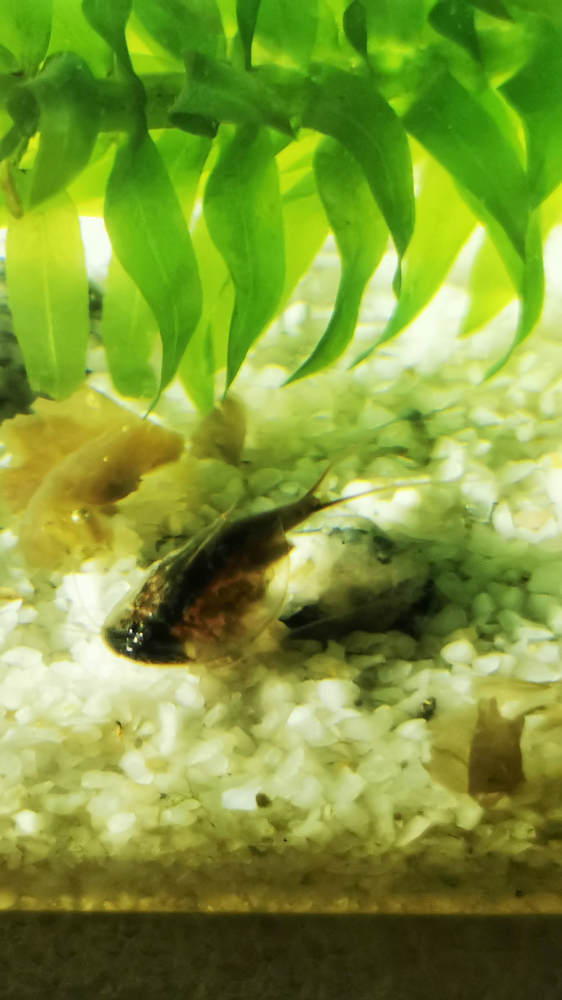
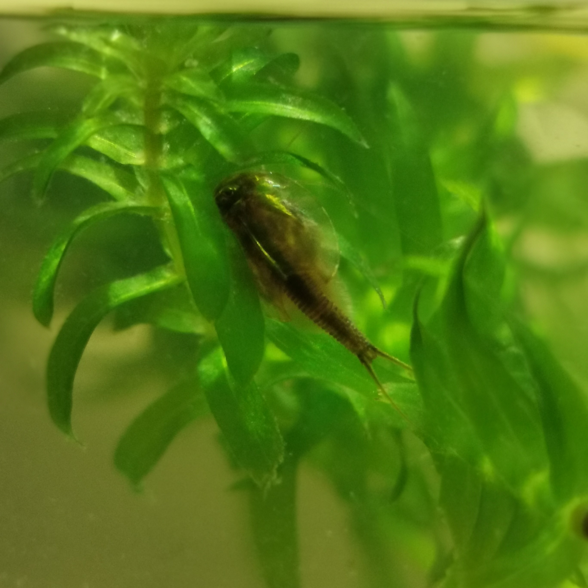

Cancriformis Austria
Diese Triops Art stammt aus Europa. Man nennt ihn auch Sommerschildkrebs. Er bevorzugt kühlere Gewässer und um die 20 -23 °C Wassertemperatur. Da der Cancriformis unter niedrigeren Temperaturen aufwächst lässt er sich viel Zeit, wird dafür aber auch bis zu 7cm lang und ca. 5 Monate alt. Der Panzer ist dunkelbraun bis schwarz und von variablen Marmorierung geprägt. Diese Triopse haben einen kurzen Schwanz und einem gedrungenen Körperbau. Der Cancriformis ist der ruhigere Zeitgenossen, er liebt es im Sand zu buddeln. Kannibalismus kann bei diser Art vereinzelt vorkommen.

